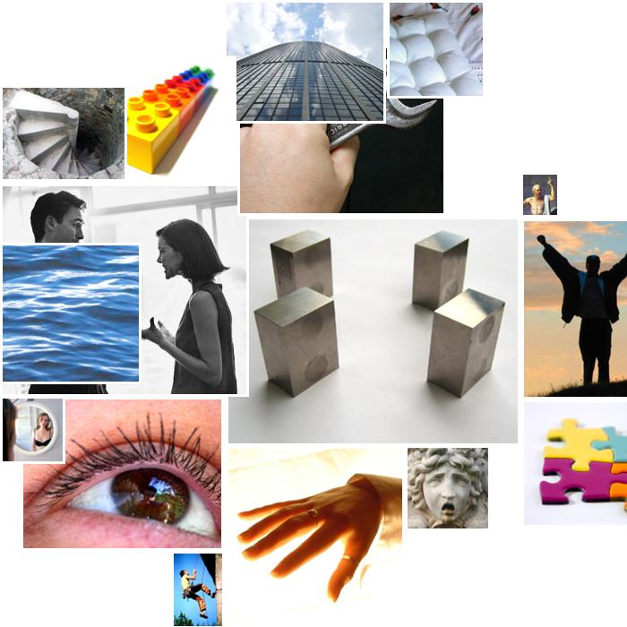

paige.txt
  order
order standards, standards, system, standards, measurable, simple, grade, standards, simple, standards, standards, system
 social_behavior
social_behavior educates, education, teachers, information, shared, teachers, teachers, education, announced, education, follow, education, proposed, promised, proposal, calls, assistance, assistance, education, requested, say, help, teachers, grants, excuses, say, say, teachers, say, election, elect, promises, education, helping
 instrumental_behavior
instrumental_behavior pursuit, founders, delivered, students, tried, spending, achievement, goals, job, results, delivered, results, students, goal, students, students, making, working, test, students, achievement, afford, work, build, achievements, achievement, results, worked, students
 touch
touch handle
 vision
vision vision, saw, vision, brown, brown, saw, look, beaming, look
 glory
glory great, great, great, greatness, outstanding, supreme, principals, pride, great
 abstraction
abstraction ideals, defined, understands, information, choices, problem, thought, true, quality, plan, real, consequences, real, real, choices, choice, learning, choice, learn, may, choices, choice, choose, true
 height
height high, high, high, high
 water
water washington, watered
 concreteness
concreteness where, opened, behind, level, at, level, behind, across, closing, behind, behind, back, forward, back, at, where, behind
 depth
depth low, under
 soft
soft soft
 sadness
sadness despair
 narcissism
narcissism hands, hearts, handle
 ascent
ascent rising
 moral_imperative
moral_imperative proper, law, should, right, correct
educates, education, teachers, information, shared, teachers, teachers, education, announced, education, follow, education, proposed, promised, proposal, calls, assistance, assistance, education, requested, say, help, teachers, grants, excuses, say, say, teachers, say, election, elect, promises, education, helping